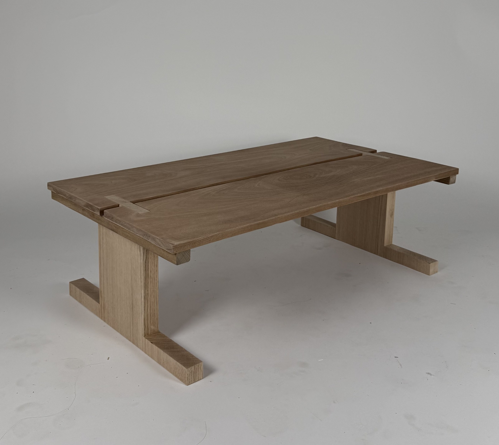
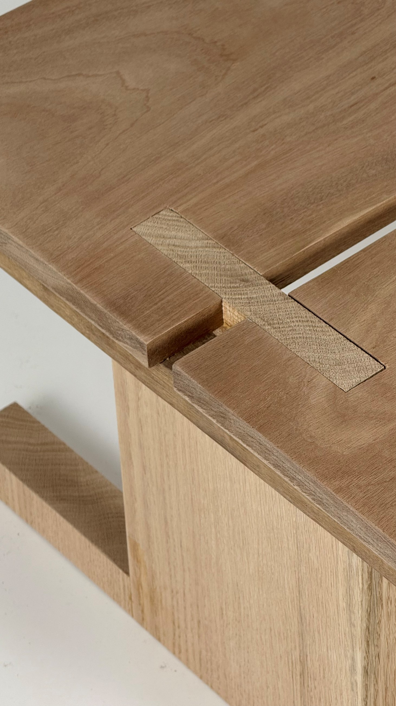
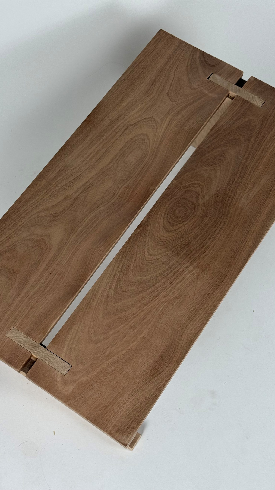
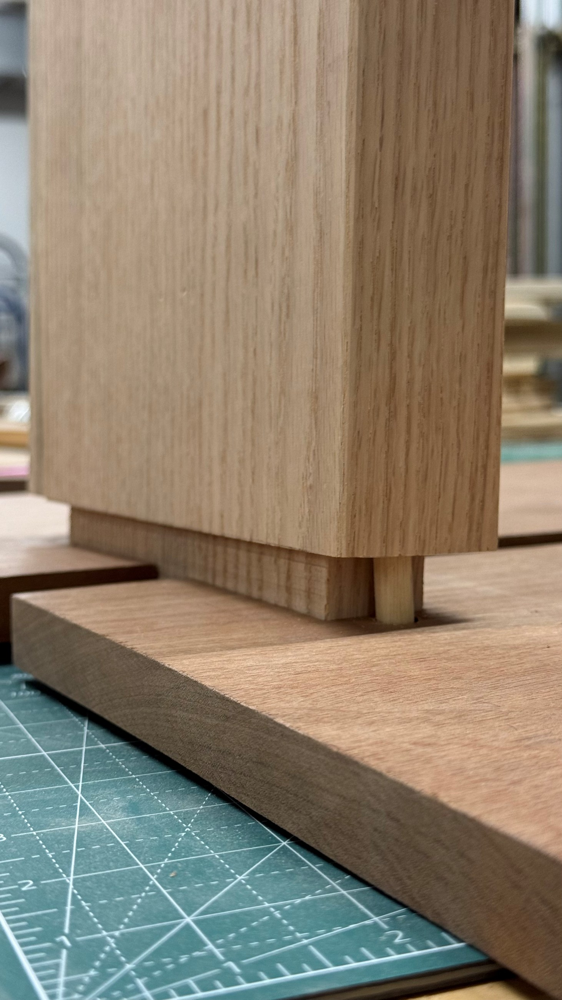
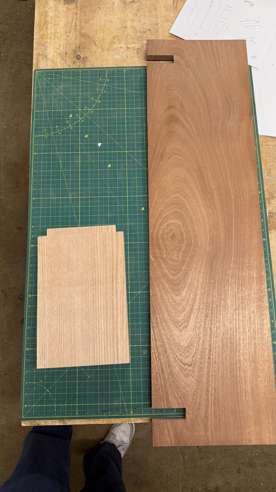
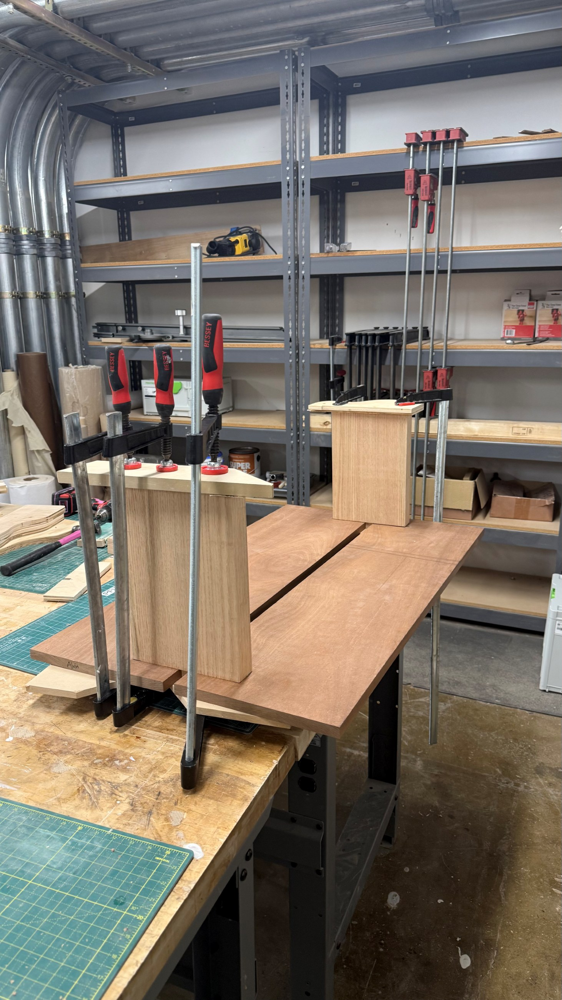
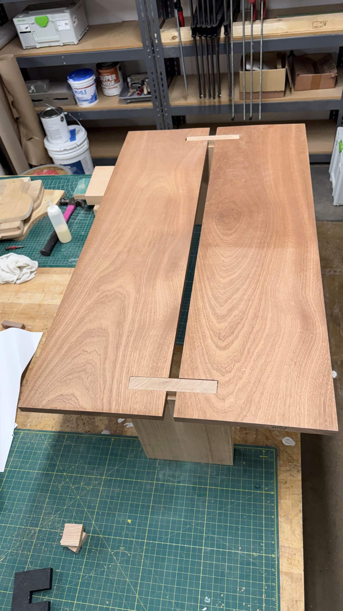
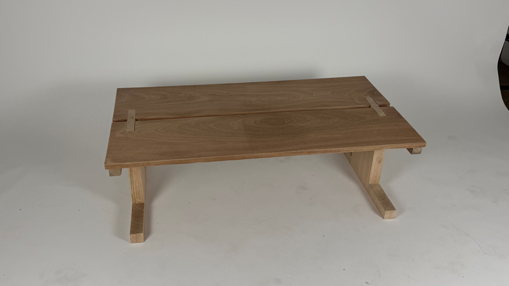

← Back
Coffee Table
Furniture
I made this coffee table as a personal exercise in woodworking after returning from Copenhagen. Taking advantage of Pratt's wood shop, I designed and crafted the piece myself using mahogany and white oak. The project gave me an opportunity to practice joinery, material preparation, assembly, and finishing while developing a more direct understanding of how contrasting woods and exposed connections shape the character of a simple, low table.








